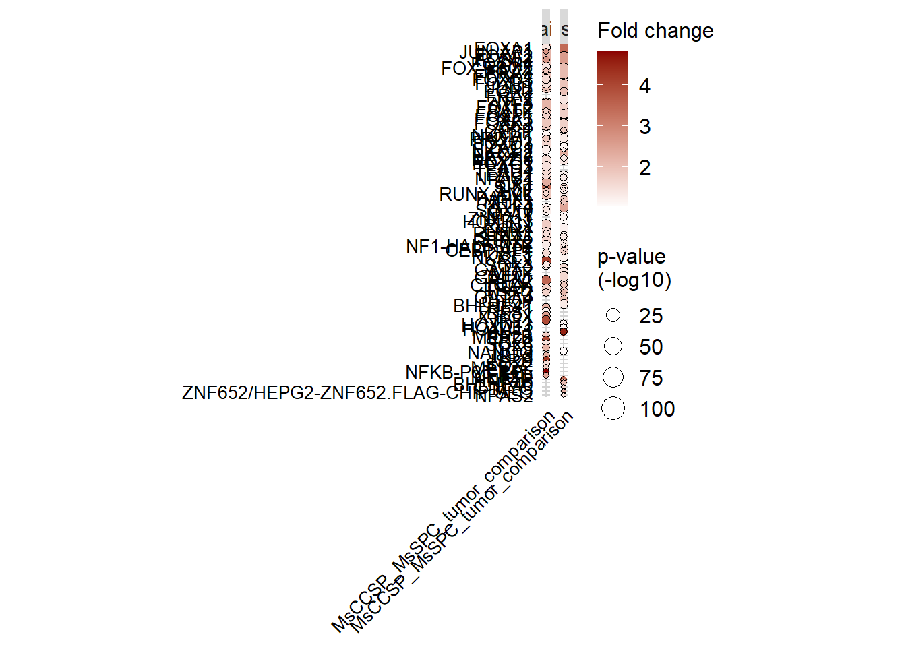
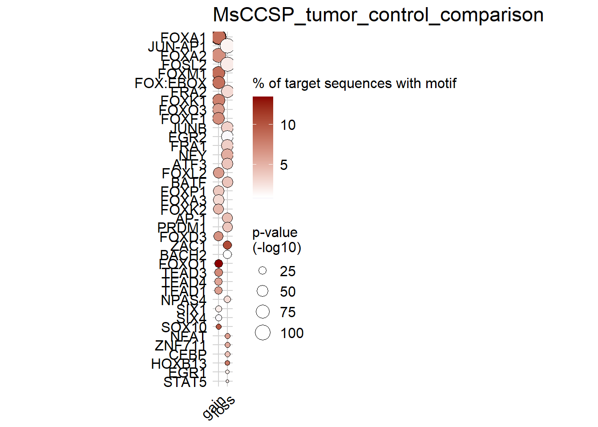
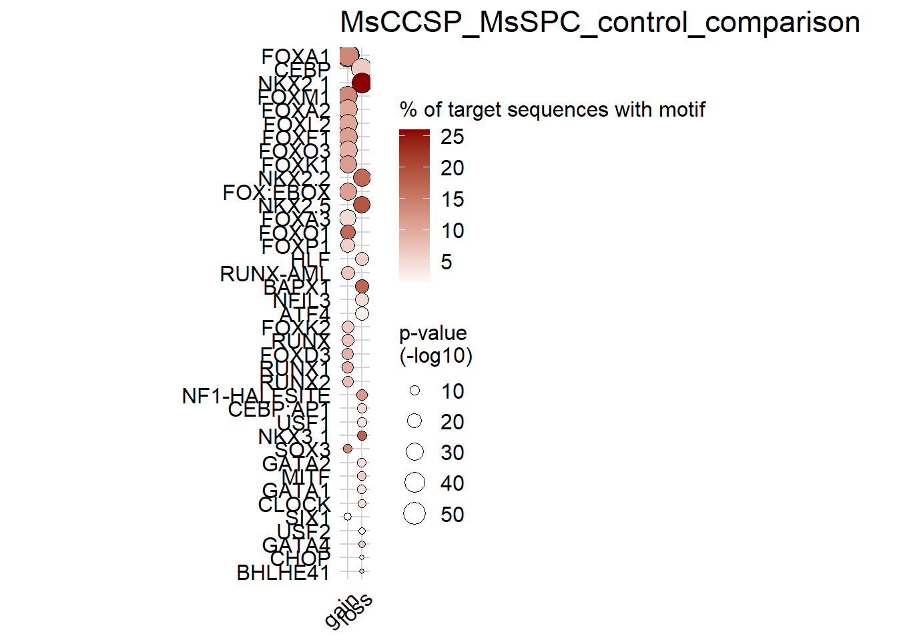
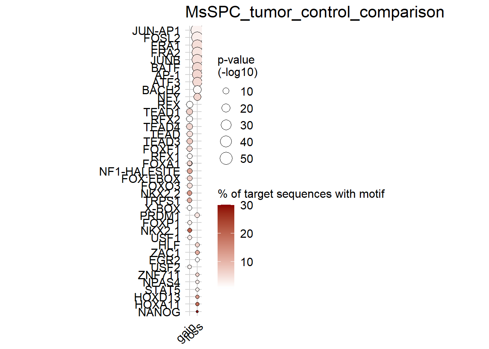
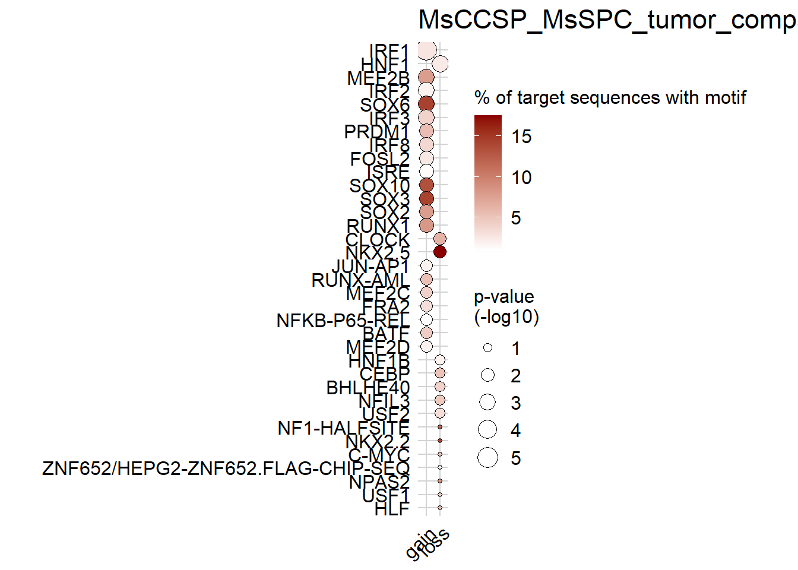

Last updated: 2021-04-13
Checks: 7 0
Knit directory: CoO_Lung_Cancer/
This reproducible R Markdown analysis was created with workflowr (version 1.6.2.9000). The Checks tab describes the reproducibility checks that were applied when the results were created. The Past versions tab lists the development history.
Great! Since the R Markdown file has been committed to the Git repository, you know the exact version of the code that produced these results.
Great job! The global environment was empty. Objects defined in the global environment can affect the analysis in your R Markdown file in unknown ways. For reproduciblity it’s best to always run the code in an empty environment.
The command set.seed(20191010) was run prior to running the code in the R Markdown file. Setting a seed ensures that any results that rely on randomness, e.g. subsampling or permutations, are reproducible.
Great job! Recording the operating system, R version, and package versions is critical for reproducibility.
Nice! There were no cached chunks for this analysis, so you can be confident that you successfully produced the results during this run.
Great job! Using relative paths to the files within your workflowr project makes it easier to run your code on other machines.
Great! You are using Git for version control. Tracking code development and connecting the code version to the results is critical for reproducibility.
The results in this page were generated with repository version 6941476. See the Past versions tab to see a history of the changes made to the R Markdown and HTML files.
Note that you need to be careful to ensure that all relevant files for the analysis have been committed to Git prior to generating the results (you can use wflow_publish or wflow_git_commit). workflowr only checks the R Markdown file, but you know if there are other scripts or data files that it depends on. Below is the status of the Git repository when the results were generated:
Ignored files:
Ignored: .Rhistory
Ignored: .Rproj.user/
Ignored: analysis/.Rhistory
Ignored: data/DML_results_MsCCSP_MsSPC_comparison.RDS
Ignored: data/DML_results_MsCCSP_MsSPC_control_comparison.RDS
Ignored: data/DML_results_MsCCSP_tumor_control_comparison.RDS
Ignored: data/DML_results_MsCCSP_tumor_rfp_control_comparison.RDS
Ignored: data/DML_results_MsCCSP_tumor_rfp_tumor_comparison.RDS
Ignored: data/DML_results_MsSPC_tumor_control_comparison.RDS
Ignored: data/DML_results_MsSPC_tumor_rfp_control_comparison.RDS
Ignored: data/DML_results_MsSPC_tumor_rfp_tumor_comparison.RDS
Ignored: data/DMLs_noMsCCSP_control01_smoothed.RDS
Ignored: data/DMRs_noMsCCSP_control01_smoothed.RDS
Ignored: data/QC_data.RData
Ignored: data/annotation_table_TAGWGBS_02_10.txt
Ignored: data/genotypes_all.txt
Ignored: data/methrix_object.RDS
Ignored: data/no_snps_methrix.RDS
Ignored: data/promoter_beds/
Ignored: data/snp_data_5_strains_14_10.RDS
Ignored: data/snp_ranges.bed
Ignored: data/snp_ranges.bedGraph
Ignored: docs/01_read_in_MethylDackel.html
Ignored: docs/02-DMR_calling.html
Ignored: docs/DMR_report.html
Ignored: docs/PCA_plots.html
Ignored: docs/QC_report.html
Ignored: docs/about.html
Ignored: docs/index.html
Ignored: docs/license.html
Ignored: docs/methrix_reports.html
Ignored: docs/site_libs/jqueryui-1.11.4/index.html
Ignored: enrichment_new_groups/
Untracked files:
Untracked: analysis/02-DMR_calling.Rmd
Untracked: analysis/DMR_enrichment.Rmd
Untracked: analysis/DMR_report.Rmd
Untracked: analysis/DMR_report_selected.Rmd
Untracked: analysis/Figures.Rmd
Untracked: analysis/LMC_annotation.Rmd
Untracked: analysis/LMC_based_enhancer_enrichment.R
Untracked: analysis/LMC_promoters.Rmd
Untracked: analysis/MeDeCom.Rmd
Untracked: analysis/MeDeCom_MsCCSP.Rmd
Untracked: analysis/MeDeCom_all.Rmd
Untracked: analysis/MeDeCom_all_no_MsCCSP_c4.Rmd
Untracked: analysis/MeDeCom_controls.Rmd
Untracked: analysis/MeDeCom_controls_no_MsCCSP_c4.Rmd
Untracked: analysis/MeDeCom_poised_enhancers.Rmd
Untracked: analysis/PCA_plots.Rmd
Untracked: analysis/PCA_plots_selected.Rmd
Untracked: analysis/QC_report.Rmd
Untracked: analysis/cNMF.Rmd
Untracked: analysis/candiate_region_plot.Rmd
Untracked: analysis/candiate_region_plot_histogram.Rmd
Untracked: analysis/candiate_region_plot_histogram_new_groups.Rmd
Untracked: analysis/candidate_selection.Rmd
Untracked: analysis/combined_candidate_plots.Rmd
Untracked: analysis/combined_differential.Rmd
Untracked: analysis/combined_enhancer_plots.Rmd
Untracked: analysis/dmr_calling_methrix_17_07_noMsCCSP_control01_smoothed.R
Untracked: analysis/enhancers.rmd
Untracked: analysis/go_region_plot_histogram.Rmd
Untracked: analysis/homer_all.Rmd
Untracked: analysis/homer_enhancers.Rmd
Untracked: analysis/prepare_homer.Rmd
Untracked: analysis/prepare_homer_alldmr.Rmd
Untracked: analysis/prepare_homer_alldmr_new.Rmd
Untracked: analysis/prepare_medecom_regions.Rmd
Untracked: analysis/prepare_promoters_tca.Rmd
Untracked: analysis/tcga_medecom.Rmd
Untracked: code/EpiScore.R
Untracked: code/Figure_1.R
Untracked: code/Figure_2.R
Untracked: code/Figure_3.R
Untracked: code/LMC_correlation_enrichment.R
Untracked: code/LMC_enrichment.R
Untracked: code/color_palette.R
Untracked: code/gviz_region_plot_figures.R
Untracked: code/medecom_poised_enhancers_all.R
Untracked: code/medecom_poised_enhancers_all_hopx.R
Untracked: code/medecom_poised_enhancers_all_hopx_no1.R
Untracked: code/medecom_poised_enhancers_all_norfp.R
Untracked: code/medecom_poised_enhancers_all_smoothed.R
Untracked: code/presentation_heatmap.R
Untracked: code/shiny_app/
Untracked: code/tcga_medecom_corr.R
Untracked: code/tcga_medecom_correlation.RData
Untracked: code/tcga_shiny.R
Untracked: data/.gitignore
Untracked: data/AU040972cand.pdf
Untracked: data/CD74cand.pdf
Untracked: data/Cyp2f2cand.pdf
Untracked: data/DML_results_MsCCSP_MsSPC_tumor_comparison.RDS
Untracked: data/DML_results_new_group_MsCCSP_MsSPC_control_comparison.RDS
Untracked: data/DML_results_new_group_MsCCSP_MsSPC_tumor_comparison.RDS
Untracked: data/DML_results_new_group_MsCCSP_tumor_control_comparison.RDS
Untracked: data/DML_results_new_group_MsSPC_tumor_control_comparison.RDS
Untracked: data/DMLs_new_groups.RDS
Untracked: data/DMRs_new_groups.RDS
Untracked: data/E-ENAD-15-marker-genes-files_Mouse_cell_atlas.zip
Untracked: data/E-ENAD-15.marker_genes_inferred_cell_type_-_ontology_labels.tsv
Untracked: data/ENCODE_SCREEN_lung_postnatal_0_CRE.7group.bed
Untracked: data/ENdb_target_gene.txt
Untracked: data/FactorViz_outputs.zip
Untracked: data/FactorViz_outputs/
Untracked: data/Frem1cand.pdf
Untracked: data/Fukazawa_2016_Sox2_targets.xlsx
Untracked: data/Itih4cand.pdf
Untracked: data/Itih4cand_data.RDS
Untracked: data/JASPAR_2020_matrix_clustering_vertebrates_archive.zip
Untracked: data/Krt19cand.pdf
Untracked: data/MeDeCom_MCCSP_SPC_prepared_filt.rds
Untracked: data/MsCCPS_MsSPC_enhancers.rds
Untracked: data/MsCCPS_MsSPC_promoters.rds
Untracked: data/MsCCSP_MsSPC_tumor_different_genes.txt
Untracked: data/MsCCSP_tumor_MsCCSP_normal_different_genes.txt
Untracked: data/MsSPC_normal_MsCCSP_normal_different_genes.txt
Untracked: data/MsSPC_tumor_MsCCSP_tumor_different_genes.txt
Untracked: data/MsSPC_tumor_MsSPC_normal_different_genes.txt
Untracked: data/Nkx2-1cand.pdf
Untracked: data/Nr2f2cand.pdf
Untracked: data/Scgb1a1cand.pdf
Untracked: data/Scgb1a1cand_data.RDS
Untracked: data/Scgb3a2cand.pdf
Untracked: data/Scgb3a2cand_data.RDS
Untracked: data/Sftpccand.pdf
Untracked: data/Sftpccand_data.RDS
Untracked: data/Sox2_target.tsv
Untracked: data/Sox2cand.pdf
Untracked: data/Sox2cand_data.RDS
Untracked: data/all_Ts.RDS
Untracked: data/all_metascape report.zip
Untracked: data/all_samples_enhancers.rds
Untracked: data/all_samples_promoters.rds
Untracked: data/annotated_regions/
Untracked: data/annotation_table_TAGWGBS_16_2_2021.txt
Untracked: data/annotation_table_TAGWGBS_17_2.txt
Untracked: data/annotation_table_TAGWGBS_24_2.txt
Untracked: data/annotation_table_TAGWGBS_31_1.txt
Untracked: data/bedgraphs/
Untracked: data/beds/
Untracked: data/beds_new_groups/
Untracked: data/bivalent_enhancers_plot.pdf
Untracked: data/candidate_genes.txt
Untracked: data/candidate_promoter_methylation.RDS
Untracked: data/candidate_promoter_methylation_smoothed.RDS
Untracked: data/candidate_promoter_methylation_smoothed_methrix.RDS
Untracked: data/candidate_promoter_smoothed_bsseq.RDS
Untracked: data/cell_type_markers.gmt
Untracked: data/cellphonedb_example_data.zip
Untracked: data/comparisons.RDS
Untracked: data/dmrs/
Untracked: data/enc_epd_enhc_gene_mm10.txt
Untracked: data/enc_epd_enhc_gene_mm10.txt.gz
Untracked: data/enc_epd_enhc_gene_mm10_int.txt
Untracked: data/enhancer_beds/
Untracked: data/enhancers/
Untracked: data/enhancers_CCSP_genes.txt
Untracked: data/enhancers_LMC1_genes.txt
Untracked: data/enhancers_LMC2_genes.txt
Untracked: data/enhancers_LMC3_genes.txt
Untracked: data/enhancers_LMC4_genes.txt
Untracked: data/enhancers_genes.RDS
Untracked: data/enhancers_genes.txt
Untracked: data/enhancers_genes.xlsx
Untracked: data/enhancers_genes_nobg.txt
Untracked: data/enhancers_genes_nobg.xlsx
Untracked: data/figures/
Untracked: data/ge_dmr_candidates.rds
Untracked: data/homer_res/
Untracked: data/homer_res_new_groups/
Untracked: data/human_lung_cell_atlas_all_markers.txt
Untracked: data/interactive_trees/
Untracked: data/labels.RDS
Untracked: data/linked_promoter_TSS.xlsx
Untracked: data/lung_cell_atlas_other_markers.txt
Untracked: data/medecom/
Untracked: data/medecom_MsCCSP.RDS
Untracked: data/medecom_MsCCSP_MsSPC_enhancers.RDS
Untracked: data/medecom_MsCCSP_MsSPC_promoters.RDS
Untracked: data/medecom_MsCCSP_SPC_promoters.RDS
Untracked: data/medecom_MsCCSP_promoters.RDS
Untracked: data/medecom_all.RDS
Untracked: data/medecom_all_no_MsCCSP_c4.RDS
Untracked: data/medecom_controls.RDS
Untracked: data/medecom_proportions_all.RDS
Untracked: data/medecom_proportions_all_HOPX.RDS
Untracked: data/medecom_random_sites.RDS
Untracked: data/medecom_random_sites_all.RDS
Untracked: data/metascape_result.tju3krgk_.xlsx
Untracked: data/mm9ToMm10.over.chain
Untracked: data/mm9ToMm10.over.chain.gz
Untracked: data/most_variable_in_controls.rds
Untracked: data/new_tumor_groups.RDS
Untracked: data/new_tumor_groups_HOPX.RDS
Untracked: data/nkx2_1_enrichment/
Untracked: data/no_snpsXY_methrix.RDS
Untracked: data/no_snps_methrix.qs
Untracked: data/promoter_bsseq_smoothed.RDS
Untracked: data/promoter_methylation.RDS
Untracked: data/promoter_methylation_smoothed.RDS
Untracked: data/promoter_methylation_smoothed_methrix.RDS
Untracked: data/random_sites.rds
Untracked: data/random_sites_all.rds
Untracked: data/removed_sites_MeDeCom.RDS
Untracked: data/removed_sites_MsCCSP_MeDeCom.RDS
Untracked: data/removed_sites_all_MeDeCom.RDS
Untracked: data/removed_sites_control_MeDeCom.RDS
Untracked: data/selected_markers_MCA.txt
Untracked: data/selected_sites_MeDeCom.RDS
Untracked: data/selected_sites_MsCCSP_MeDeCom.RDS
Untracked: data/selected_sites_all_MeDeCom.RDS
Untracked: data/selected_sites_control_MeDeCom.RDS
Untracked: data/sequencing_annotation_table.csv
Untracked: data/target_genes_nkx2-1.txt
Untracked: data/target_genes_nkx2-1.xlsx
Untracked: data/tcga_laml_ge.RDS
Untracked: data/tcga_luad_ge.RDS
Untracked: data/tcga_medecom_corr_LMC1.tiff
Untracked: data/tcga_medecom_corr_LMC2.tiff
Untracked: data/tcga_medecom_corr_LMC3.tiff
Untracked: data/tcga_medecom_corr_LMC4.tiff
Untracked: data/tcga_medecom_corr_LMC5.tiff
Untracked: data/tcga_medecom_corr_LMC6.tiff
Untracked: data/tcga_medecom_corr_LMC7.tiff
Untracked: data/tcga_medecom_correlation.RData
Untracked: data/~$Fukazawa_2016_Sox2_targets.xlsx
Untracked: data/~$linked_promoter_TSS.xlsx
Untracked: desktop.ini
Untracked: docs/.gitignore
Untracked: docs/DMR_enrichment.html
Untracked: docs/DMR_report_selected.html
Untracked: docs/Figure_1/
Untracked: docs/Figure_2/
Untracked: docs/Figure_3/
Untracked: docs/Figures.html
Untracked: docs/PCA_plots_selected.html
Untracked: docs/QC_report/
Untracked: docs/QC_report_no_SNPs/
Untracked: docs/candiate_region_plot.html
Untracked: docs/candiate_region_plot_histogram.html
Untracked: docs/figure/DMR_enrichment.Rmd/
Untracked: docs/figure/DMR_report.Rmd/
Untracked: docs/figure/DMR_report_new_groups.Rmd/
Untracked: docs/figure/DMR_report_selected.Rmd/
Untracked: docs/figure/Figures.Rmd/
Untracked: docs/figure/MeDeCom_all.Rmd/
Untracked: docs/figure/MeDeCom_all_no_MsCCSP_c4.Rmd/
Untracked: docs/figure/MeDeCom_controls.Rmd/
Untracked: docs/figure/PCA_plots.Rmd/
Untracked: docs/figure/PCA_plots_selected.Rmd/
Untracked: docs/figure/prepare_medecom_regions.Rmd/
Untracked: docs/medecom_CCSP_controls_plot.RDS
Untracked: docs/plots_for_figures/
Untracked: docs/prepare_homer.html
Untracked: docs/prepare_medecom_regions.html
Untracked: docs/site_libs/crosstalk-1.1.0.1/
Untracked: output/DML_results_new_groups.RDS
Untracked: output/QC_report.html
Untracked: output/QC_report/MC_per_chr.tsv
Untracked: output/QC_report/MsCCSP_control01_density.tsv.gz
Untracked: output/QC_report/MsCCSP_control02_density.tsv.gz
Untracked: output/QC_report/MsCCSP_control03_density.tsv.gz
Untracked: output/QC_report/MsCCSP_control04_density.tsv.gz
Untracked: output/QC_report/MsCCSP_control05_density.tsv.gz
Untracked: output/QC_report/MsCCSP_control06_density.tsv.gz
Untracked: output/QC_report/MsCCSP_control07_density.tsv.gz
Untracked: output/QC_report/MsCCSP_tumor01_density.tsv.gz
Untracked: output/QC_report/MsCCSP_tumor02.rfp_density.tsv.gz
Untracked: output/QC_report/MsCCSP_tumor02_density.tsv.gz
Untracked: output/QC_report/MsCCSP_tumor03.rfp_density.tsv.gz
Untracked: output/QC_report/MsCCSP_tumor03_density.tsv.gz
Untracked: output/QC_report/MsCCSP_tumor04.rfp_density.tsv.gz
Untracked: output/QC_report/MsCCSP_tumor04_density.tsv.gz
Untracked: output/QC_report/MsHOPX_control01_density.tsv.gz
Untracked: output/QC_report/MsHOPX_control02_density.tsv.gz
Untracked: output/QC_report/MsHOPX_control03_density.tsv.gz
Untracked: output/QC_report/MsHOPX_control04_density.tsv.gz
Untracked: output/QC_report/MsHOPX_control05_density.tsv.gz
Untracked: output/QC_report/MsHOPX_tumor01.rfp_density.tsv.gz
Untracked: output/QC_report/MsHOPX_tumor01_density.tsv.gz
Untracked: output/QC_report/MsHOPX_tumor02_density.tsv.gz
Untracked: output/QC_report/MsKrt5_tumor01.rfp_density.tsv.gz
Untracked: output/QC_report/MsSPC_control01_density.tsv.gz
Untracked: output/QC_report/MsSPC_control02_density.tsv.gz
Untracked: output/QC_report/MsSPC_control03_density.tsv.gz
Untracked: output/QC_report/MsSPC_control04_density.tsv.gz
Untracked: output/QC_report/MsSPC_control05_density.tsv.gz
Untracked: output/QC_report/MsSPC_control06_density.tsv.gz
Untracked: output/QC_report/MsSPC_tumor01.rfp_density.tsv.gz
Untracked: output/QC_report/MsSPC_tumor01_density.tsv.gz
Untracked: output/QC_report/MsSPC_tumor02.rfp_density.tsv.gz
Untracked: output/QC_report/MsSPC_tumor02_density.tsv.gz
Untracked: output/QC_report/MsSPC_tumor03.rfp_density.tsv.gz
Untracked: output/QC_report/MsSPC_tumor03_density.tsv.gz
Untracked: output/QC_report/MsSPC_tumor04_density.tsv.gz
Untracked: output/QC_report/contig_lens.tsv
Untracked: output/QC_report/global_MC_per_samp.tsv
Untracked: output/QC_report/n_covered_by_all_samples.tsv
Untracked: output/QC_report/n_covered_per_chr.tsv
Untracked: output/QC_report_deprecated/
Untracked: output/QC_report_no_SNPs/MC_per_chr.tsv
Untracked: output/QC_report_no_SNPs/MsCCSP_control01_density.tsv.gz
Untracked: output/QC_report_no_SNPs/MsCCSP_control02_density.tsv.gz
Untracked: output/QC_report_no_SNPs/MsCCSP_control03_density.tsv.gz
Untracked: output/QC_report_no_SNPs/MsCCSP_control04_density.tsv.gz
Untracked: output/QC_report_no_SNPs/MsCCSP_control05_density.tsv.gz
Untracked: output/QC_report_no_SNPs/MsCCSP_control06_density.tsv.gz
Untracked: output/QC_report_no_SNPs/MsCCSP_control07_density.tsv.gz
Untracked: output/QC_report_no_SNPs/MsCCSP_tumor01_density.tsv.gz
Untracked: output/QC_report_no_SNPs/MsCCSP_tumor02.rfp_density.tsv.gz
Untracked: output/QC_report_no_SNPs/MsCCSP_tumor02_density.tsv.gz
Untracked: output/QC_report_no_SNPs/MsCCSP_tumor03.rfp_density.tsv.gz
Untracked: output/QC_report_no_SNPs/MsCCSP_tumor03_density.tsv.gz
Untracked: output/QC_report_no_SNPs/MsCCSP_tumor04.rfp_density.tsv.gz
Untracked: output/QC_report_no_SNPs/MsCCSP_tumor04_density.tsv.gz
Untracked: output/QC_report_no_SNPs/MsHOPX_control01_density.tsv.gz
Untracked: output/QC_report_no_SNPs/MsHOPX_control02_density.tsv.gz
Untracked: output/QC_report_no_SNPs/MsHOPX_control03_density.tsv.gz
Untracked: output/QC_report_no_SNPs/MsHOPX_control04_density.tsv.gz
Untracked: output/QC_report_no_SNPs/MsHOPX_control05_density.tsv.gz
Untracked: output/QC_report_no_SNPs/MsHOPX_tumor01.rfp_density.tsv.gz
Untracked: output/QC_report_no_SNPs/MsHOPX_tumor01_density.tsv.gz
Untracked: output/QC_report_no_SNPs/MsHOPX_tumor02_density.tsv.gz
Untracked: output/QC_report_no_SNPs/MsKrt5_tumor01.rfp_density.tsv.gz
Untracked: output/QC_report_no_SNPs/MsSPC_control01_density.tsv.gz
Untracked: output/QC_report_no_SNPs/MsSPC_control02_density.tsv.gz
Untracked: output/QC_report_no_SNPs/MsSPC_control03_density.tsv.gz
Untracked: output/QC_report_no_SNPs/MsSPC_control04_density.tsv.gz
Untracked: output/QC_report_no_SNPs/MsSPC_control05_density.tsv.gz
Untracked: output/QC_report_no_SNPs/MsSPC_control06_density.tsv.gz
Untracked: output/QC_report_no_SNPs/MsSPC_tumor01.rfp_density.tsv.gz
Untracked: output/QC_report_no_SNPs/MsSPC_tumor01_density.tsv.gz
Untracked: output/QC_report_no_SNPs/MsSPC_tumor02.rfp_density.tsv.gz
Untracked: output/QC_report_no_SNPs/MsSPC_tumor02_density.tsv.gz
Untracked: output/QC_report_no_SNPs/MsSPC_tumor03.rfp_density.tsv.gz
Untracked: output/QC_report_no_SNPs/MsSPC_tumor03_density.tsv.gz
Untracked: output/QC_report_no_SNPs/MsSPC_tumor04_density.tsv.gz
Untracked: output/QC_report_no_SNPs/contig_lens.tsv
Untracked: output/QC_report_no_SNPs/global_MC_per_samp.tsv
Untracked: output/QC_report_no_SNPs/n_covered_by_all_samples.tsv
Untracked: output/QC_report_no_SNPs/n_covered_per_chr.tsv
Untracked: output/QC_report_no_SNPs_deprecated/
Untracked: output/annotated_regions/
Untracked: output/candidate_regions_hist/
Untracked: output/candidate_regions_point/
Untracked: output/enrichment_res/
Untracked: output/homer/
Untracked: output/poised_enhancers_all_heatmap.pdf
Untracked: output/poised_enhancers_controls_heatmap.pdf
Untracked: output/poised_enhancers_heatmap.pdf
Untracked: output/tca_res.RDS
Untracked: output/tca_res_candidate_promoters.RDS
Untracked: output/tca_res_promoter_candidate.RDS
Unstaged changes:
Modified: analysis/02-DMR_calling_new_groups.Rmd
Modified: analysis/DMR_report_new_groups.Rmd
Modified: analysis/MeDeCom_results.Rmd
Modified: analysis/_site.yml
Modified: analysis/index.Rmd
Modified: code/MeDeCom_poised_enhancers.R
Modified: code/gviz_region_plot.R
Modified: code/homer_analysis.sh
Modified: output/QC_report/methrix_reports.html
Modified: output/QC_report_no_SNPs/methrix_reports.html
Note that any generated files, e.g. HTML, png, CSS, etc., are not included in this status report because it is ok for generated content to have uncommitted changes.
These are the previous versions of the repository in which changes were made to the R Markdown (analysis/homer_new_groups.Rmd) and HTML (public/homer_new_groups.html) files. If you’ve configured a remote Git repository (see ?wflow_git_remote), click on the hyperlinks in the table below to view the files as they were in that past version.
| File | Version | Author | Date | Message |
|---|---|---|---|---|
| Rmd | 6941476 | tkike | 2021-04-13 | wflow_publish(“analysis/homer_new_groups.Rmd”) |
DMRs <- readRDS(file.path(DATA, "DMRs_new_groups.RDS"))
comparisons_all <- names(DMRs)
#names(dmls) <- labelshomer_results <- list()
for (comp in comparisons_all){
homer_results[[comp]] <- list()
homer_results[[comp]][["gain"]] <- try(read_homer_output(paste0(HOMER_RESULTS, gsub(" ", "_", comp),"_gain")))
try(homer_results[[comp]][["gain"]]$known_motif_table$direction <- "gain")
homer_results[[comp]][["loss"]] <- try(read_homer_output(paste0(HOMER_RESULTS, gsub(" ", "_", comp),"_loss")))
try(homer_results[[comp]][["loss"]]$known_motif_table$direction <- "loss")
}
for (comp in names(homer_results)){
if (class(homer_results[[comp]]$gain)=="try-error")
homer_results[[comp]]$gain <- NULL
if (class(homer_results[[comp]]$loss)=="try-error")
homer_results[[comp]]$loss <- NULL
}combined_data <- do.call(rbind.data.frame, known_motif_results)
combined_data$significant<- ifelse(combined_data$q_value_benjamini < (0.05), "Yes", "No" )
combined_data$percent_of_target_sequences_with_motif <-
as.numeric(sapply(strsplit(combined_data$percent_of_target_sequences_with_motif ,"%", fixed=TRUE),`[`, 1))
combined_data$percent_of_background_sequences_with_motif <-
as.numeric(sapply(strsplit(combined_data$percent_of_background_sequences_with_motif ,"%", fixed=TRUE),`[`, 1))
combined_data$FC <- combined_data$percent_of_target_sequences_with_motif/combined_data$percent_of_background_sequences_with_motif
combined_data$MotifName <- factor(combined_data$MotifName, levels = unique(combined_data$MotifName[order(combined_data$log_p, decreasing = T)]))
p <- ggplot(data = as.data.frame(combined_data), aes(y=MotifName, x=comp))+coord_fixed(ratio = 0.6)+facet_grid(~ direction)+
geom_point(aes(size=log_p, fill=FC), pch=21)+
scale_fill_gradient2( midpoint = 1, low="darkblue", high="darkred", name = "Fold change")+
scale_colour_manual(values=c("grey", "black"), name="q-value < 0.05", drop=FALSE)+
scale_size(name="p-value\n(-log10)", labels = label_func) +
scale_y_discrete(limits=rev(levels(as.factor(combined_data$MotifName))))+
theme(text =element_text(size=14, color="black", family = "sans"),
axis.ticks = element_blank(), axis.line = element_blank(),
axis.text.x=element_text(size=10, angle = 45, hjust=1, color="black", family="sans"),
axis.text.y=element_text(size=10, family="sans", color="black"))+
scale_x_discrete(name=NULL)+
theme(legend.text=element_text(size=12, family="sans"),
legend.title=element_text(size=12, family= "sans"),
legend.background = element_rect(fill="white", color="white"),
panel.background = element_rect(fill="white"), panel.grid.major = element_line(color="lightgrey"),
legend.key = element_rect(fill="white"))+rremove("ylab")
print(p)
for (comp in names(g)){
cat('\n')
cat("### Comparisons ", comp, " \n")
print(g[[comp]])
#else {
# print(p)
# }
cat('\n')
}
### Comparisons MsCCSP_tumor_control_comparison 
### Comparisons MsCCSP_MsSPC_control_comparison 
### Comparisons MsSPC_tumor_control_comparison 
### Comparisons MsCCSP_MsSPC_tumor_comparison 
for (comp in names(g)){
cat('\n')
cat("### Comparisons ", comp, " \n")
print(knitr::kable(known_motif_results[[comp]]) %>%
kable_styling() %>%
scroll_box(width = "100%", height = "600px"))
cat('\n')
}| motif_name | consensus | p_value | log_p_value | q_value_benjamini | percent_of_target_sequences_with_motif | percent_of_background_sequences_with_motif | direction | MotifName | log_p |
|---|---|---|---|---|---|---|---|---|---|
| FOXA1(Forkhead)/LNCAP-FOXA1-ChIP-Seq(GSE27824)/Homer | WAAGTAAACA | 0 | -251.20 | 0 | 10.61% | 5.60% | gain | FOXA1 | 106.35853 |
| FOXA1(Forkhead)/MCF7-FOXA1-ChIP-Seq(GSE26831)/Homer | WAAGTAAACA | 0 | -211.40 | 0 | 8.80% | 4.61% | gain | FOXA1 | 88.65956 |
| Foxa2(Forkhead)/Liver-Foxa2-ChIP-Seq(GSE25694)/Homer | CYTGTTTACWYW | 0 | -204.50 | 0 | 6.94% | 3.34% | gain | FOXA2 | 85.83565 |
| FOXM1(Forkhead)/MCF7-FOXM1-ChIP-Seq(GSE72977)/Homer | TRTTTACTTW | 0 | -168.20 | 0 | 8.80% | 4.99% | gain | FOXM1 | 70.96059 |
| Fox:Ebox(Forkhead,bHLH)/Panc1-Foxa2-ChIP-Seq(GSE47459)/Homer | NNNVCTGWGYAAACASN | 0 | -161.60 | 0 | 8.60% | 4.90% | gain | FOX:EBOX | 68.05750 |
| FOXK1(Forkhead)/HEK293-FOXK1-ChIP-Seq(GSE51673)/Homer | NVWTGTTTAC | 0 | -153.10 | 0 | 7.74% | 4.33% | gain | FOXK1 | 64.13668 |
| Foxo3(Forkhead)/U2OS-Foxo3-ChIP-Seq(E-MTAB-2701)/Homer | DGTAAACA | 0 | -151.50 | 0 | 6.12% | 3.15% | gain | FOXO3 | 63.20362 |
| Foxf1(Forkhead)/Lung-Foxf1-ChIP-Seq(GSE77951)/Homer | WWATRTAAACAN | 0 | -145.60 | 0 | 6.99% | 3.84% | gain | FOXF1 | 61.26162 |
| FoxL2(Forkhead)/Ovary-FoxL2-ChIP-Seq(GSE60858)/Homer | WWTRTAAACAVG | 0 | -115.60 | 0 | 6.23% | 3.55% | gain | FOXL2 | 48.31277 |
| FOXP1(Forkhead)/H9-FOXP1-ChIP-Seq(GSE31006)/Homer | NYYTGTTTACHN | 0 | -111.90 | 0 | 3.83% | 1.84% | gain | FOXP1 | 46.39992 |
| Foxa3(Forkhead)/Liver-Foxa3-ChIP-Seq(GSE77670)/Homer | BSNTGTTTACWYWGN | 0 | -111.20 | 0 | 2.94% | 1.26% | gain | FOXA3 | 46.39992 |
| FOXK2(Forkhead)/U2OS-FOXK2-ChIP-Seq(E-MTAB-2204)/Homer | SCHTGTTTACAT | 0 | -109.20 | 0 | 4.75% | 2.51% | gain | FOXK2 | 45.43771 |
| FoxD3(forkhead)/ZebrafishEmbryo-Foxd3.biotin-ChIP-seq(GSE106676)/Homer | TGTTTAYTTAGC | 0 | -87.08 | 0 | 6.81% | 4.32% | gain | FOXD3 | 35.47247 |
| Foxo1(Forkhead)/RAW-Foxo1-ChIP-Seq(Fan_et_al.)/Homer | CTGTTTAC | 0 | -67.41 | 0 | 13.53% | 10.37% | gain | FOXO1 | 27.50465 |
| TEAD3(TEA)/HepG2-TEAD3-ChIP-Seq(Encode)/Homer | TRCATTCCAG | 0 | -66.45 | 0 | 7.27% | 4.98% | gain | TEAD3 | 26.53462 |
| TEAD4(TEA)/Tropoblast-Tead4-ChIP-Seq(GSE37350)/Homer | CCWGGAATGY | 0 | -64.06 | 0 | 5.78% | 3.79% | gain | TEAD4 | 25.56265 |
| TEAD1(TEAD)/HepG2-TEAD1-ChIP-Seq(Encode)/Homer | CYRCATTCCA | 0 | -61.07 | 0 | 6.13% | 4.12% | gain | TEAD1 | 24.58897 |
| Six1(Homeobox)/Myoblast-Six1-ChIP-Chip(GSE20150)/Homer | GKVTCADRTTWC | 0 | -49.34 | 0 | 1.91% | 0.97% | gain | SIX1 | 19.63728 |
| Six4(Homeobox)/MCF7-SIX4-ChIP-Seq(Encode)/Homer | TGWAAYCTGABACCB | 0 | -48.37 | 0 | 0.68% | 0.20% | gain | SIX4 | 19.63728 |
| Sox10(HMG)/SciaticNerve-Sox3-ChIP-Seq(GSE35132)/Homer | CCWTTGTYYB | 0 | -41.86 | 0 | 10.00% | 7.84% | gain | SOX10 | 16.65956 |
| Jun-AP1(bZIP)/K562-cJun-ChIP-Seq(GSE31477)/Homer | GATGASTCATCN | 0 | -229.60 | 0 | 1.56% | 0.81% | loss | JUN-AP1 | 96.35853 |
| Fosl2(bZIP)/3T3L1-Fosl2-ChIP-Seq(GSE56872)/Homer | NATGASTCABNN | 0 | -202.10 | 0 | 2.01% | 1.19% | loss | FOSL2 | 84.65956 |
| Fra2(bZIP)/Striatum-Fra2-ChIP-Seq(GSE43429)/Homer | GGATGACTCATC | 0 | -157.60 | 0 | 2.91% | 2.00% | loss | FRA2 | 65.83565 |
| JunB(bZIP)/DendriticCells-Junb-ChIP-Seq(GSE36099)/Homer | RATGASTCAT | 0 | -146.70 | 0 | 3.38% | 2.42% | loss | JUNB | 60.96059 |
| Egr2(Zf)/Thymocytes-Egr2-ChIP-Seq(GSE34254)/Homer | NGCGTGGGCGGR | 0 | -144.60 | 0 | 0.71% | 0.33% | loss | EGR2 | 60.20362 |
| Fra1(bZIP)/BT549-Fra1-ChIP-Seq(GSE46166)/Homer | NNATGASTCATH | 0 | -144.00 | 0 | 3.56% | 2.59% | loss | FRA1 | 60.20362 |
| NFY(CCAAT)/Promoter/Homer | RGCCAATSRG | 0 | -143.90 | 0 | 5.30% | 4.10% | loss | NFY | 60.20362 |
| Atf3(bZIP)/GBM-ATF3-ChIP-Seq(GSE33912)/Homer | DATGASTCATHN | 0 | -126.80 | 0 | 4.02% | 3.04% | loss | ATF3 | 53.26162 |
| BATF(bZIP)/Th17-BATF-ChIP-Seq(GSE39756)/Homer | DATGASTCAT | 0 | -116.80 | 0 | 4.07% | 3.12% | loss | BATF | 48.31277 |
| AP-1(bZIP)/ThioMac-PU.1-ChIP-Seq(GSE21512)/Homer | VTGACTCATC | 0 | -109.90 | 0 | 4.38% | 3.42% | loss | AP-1 | 45.35853 |
| PRDM1(Zf)/Hela-PRDM1-ChIP-Seq(GSE31477)/Homer | ACTTTCACTTTC | 0 | -95.86 | 0 | 3.96% | 3.10% | loss | PRDM1 | 39.39992 |
| Zac1(Zf)/Neuro2A-Plagl1-ChIP-Seq(GSE75942)/Homer | HAWGRGGCCM | 0 | -75.66 | 0 | 10.64% | 9.40% | loss | ZAC1 | 30.43771 |
| Bach2(bZIP)/OCILy7-Bach2-ChIP-Seq(GSE44420)/Homer | TGCTGAGTCA | 0 | -71.62 | 0 | 1.00% | 0.65% | loss | BACH2 | 29.47247 |
| Npas4(bHLH)/Neuron-Npas4-ChIP-Seq(GSE127793)/Homer | NHRTCACGACDN | 0 | -52.91 | 0 | 2.84% | 2.31% | loss | NPAS4 | 20.50465 |
| NFAT(RHD)/Jurkat-NFATC1-ChIP-Seq(Jolma_et_al.)/Homer | ATTTTCCATT | 0 | -42.89 | 0 | 6.22% | 5.50% | loss | NFAT | 16.56265 |
| ZNF711(Zf)/SHSY5Y-ZNF711-ChIP-Seq(GSE20673)/Homer | AGGCCTAG | 0 | -42.25 | 0 | 5.52% | 4.85% | loss | ZNF711 | 16.56265 |
| CEBP(bZIP)/ThioMac-CEBPb-ChIP-Seq(GSE21512)/Homer | ATTGCGCAAC | 0 | -40.57 | 0 | 4.29% | 3.71% | loss | CEBP | 15.58897 |
| HOXB13(Homeobox)/ProstateTumor-HOXB13-ChIP-Seq(GSE56288)/Homer | TTTTATKRGG | 0 | -36.85 | 0 | 8.15% | 7.40% | loss | HOXB13 | 14.61380 |
| Egr1(Zf)/K562-Egr1-ChIP-Seq(GSE32465)/Homer | TGCGTGGGYG | 0 | -36.81 | 0 | 1.95% | 1.58% | loss | EGR1 | 13.63728 |
| STAT5(Stat)/mCD4+-Stat5-ChIP-Seq(GSE12346)/Homer | RTTTCTNAGAAA | 0 | -32.40 | 0 | 2.20% | 1.83% | loss | STAT5 | 12.65956 |
| motif_name | consensus | p_value | log_p_value | q_value_benjamini | percent_of_target_sequences_with_motif | percent_of_background_sequences_with_motif | direction | MotifName | log_p |
|---|---|---|---|---|---|---|---|---|---|
| FOXA1(Forkhead)/LNCAP-FOXA1-ChIP-Seq(GSE27824)/Homer | WAAGTAAACA | 0 | -139.80 | 0 | 16.52% | 7.70% | gain | FOXA1 | 57.358526 |
| FOXA1(Forkhead)/MCF7-FOXA1-ChIP-Seq(GSE26831)/Homer | WAAGTAAACA | 0 | -116.80 | 0 | 13.76% | 6.36% | gain | FOXA1 | 47.659556 |
| FOXM1(Forkhead)/MCF7-FOXM1-ChIP-Seq(GSE72977)/Homer | TRTTTACTTW | 0 | -93.63 | 0 | 13.45% | 6.77% | gain | FOXM1 | 37.835647 |
| Foxa2(Forkhead)/Liver-Foxa2-ChIP-Seq(GSE25694)/Homer | CYTGTTTACWYW | 0 | -90.50 | 0 | 10.07% | 4.51% | gain | FOXA2 | 36.960586 |
| FoxL2(Forkhead)/Ovary-FoxL2-ChIP-Seq(GSE60858)/Homer | WWTRTAAACAVG | 0 | -88.24 | 0 | 10.29% | 4.71% | gain | FOXL2 | 36.057496 |
| Foxf1(Forkhead)/Lung-Foxf1-ChIP-Seq(GSE77951)/Homer | WWATRTAAACAN | 0 | -86.04 | 0 | 11.07% | 5.29% | gain | FOXF1 | 35.136677 |
| Foxo3(Forkhead)/U2OS-Foxo3-ChIP-Seq(E-MTAB-2701)/Homer | DGTAAACA | 0 | -84.83 | 0 | 9.33% | 4.14% | gain | FOXO3 | 34.203624 |
| FOXK1(Forkhead)/HEK293-FOXK1-ChIP-Seq(GSE51673)/Homer | NVWTGTTTAC | 0 | -73.77 | 0 | 11.35% | 5.84% | gain | FOXK1 | 30.261616 |
| Fox:Ebox(Forkhead,bHLH)/Panc1-Foxa2-ChIP-Seq(GSE47459)/Homer | NNNVCTGWGYAAACASN | 0 | -73.46 | 0 | 11.19% | 5.74% | gain | FOX:EBOX | 29.312768 |
| Foxa3(Forkhead)/Liver-Foxa3-ChIP-Seq(GSE77670)/Homer | BSNTGTTTACWYWGN | 0 | -67.37 | 0 | 4.68% | 1.60% | gain | FOXA3 | 27.358526 |
| Foxo1(Forkhead)/RAW-Foxo1-ChIP-Seq(Fan_et_al.)/Homer | CTGTTTAC | 0 | -56.53 | 0 | 17.02% | 10.94% | gain | FOXO1 | 22.399919 |
| FOXP1(Forkhead)/H9-FOXP1-ChIP-Seq(GSE31006)/Homer | NYYTGTTTACHN | 0 | -52.62 | 0 | 5.64% | 2.47% | gain | FOXP1 | 20.437707 |
| RUNX-AML(Runt)/CD4+-PolII-ChIP-Seq(Barski_et_al.)/Homer | GCTGTGGTTW | 0 | -44.32 | 0 | 6.97% | 3.62% | gain | RUNX-AML | 17.472469 |
| FOXK2(Forkhead)/U2OS-FOXK2-ChIP-Seq(E-MTAB-2204)/Homer | SCHTGTTTACAT | 0 | -40.08 | 0 | 6.42% | 3.35% | gain | FOXK2 | 15.504654 |
| RUNX(Runt)/HPC7-Runx1-ChIP-Seq(GSE22178)/Homer | SAAACCACAG | 0 | -37.27 | 0 | 7.01% | 3.88% | gain | RUNX | 14.534617 |
| FoxD3(forkhead)/ZebrafishEmbryo-Foxd3.biotin-ChIP-seq(GSE106676)/Homer | TGTTTAYTTAGC | 0 | -36.54 | 0 | 8.90% | 5.35% | gain | FOXD3 | 13.588975 |
| RUNX1(Runt)/Jurkat-RUNX1-ChIP-Seq(GSE29180)/Homer | AAACCACARM | 0 | -34.59 | 0 | 9.33% | 5.78% | gain | RUNX1 | 13.588975 |
| RUNX2(Runt)/PCa-RUNX2-ChIP-Seq(GSE33889)/Homer | NWAACCACADNN | 0 | -33.26 | 0 | 7.81% | 4.65% | gain | RUNX2 | 12.613798 |
| Sox3(HMG)/NPC-Sox3-ChIP-Seq(GSE33059)/Homer | CCWTTGTY | 0 | -26.01 | 0 | 13.39% | 9.66% | gain | SOX3 | 9.637279 |
| Six1(Homeobox)/Myoblast-Six1-ChIP-Chip(GSE20150)/Homer | GKVTCADRTTWC | 0 | -22.73 | 0 | 2.26% | 0.97% | gain | SIX1 | 7.680745 |
| CEBP(bZIP)/ThioMac-CEBPb-ChIP-Seq(GSE21512)/Homer | ATTGCGCAAC | 0 | -107.50 | 0 | 6.47% | 2.73% | loss | CEBP | 43.358526 |
| Nkx2.1(Homeobox)/LungAC-Nkx2.1-ChIP-Seq(GSE43252)/Homer | RSCACTYRAG | 0 | -98.48 | 0 | 26.04% | 18.44% | loss | NKX2.1 | 39.659556 |
| Nkx2.2(Homeobox)/NPC-Nkx2.2-ChIP-Seq(GSE61673)/Homer | BTBRAGTGSN | 0 | -74.22 | 0 | 16.94% | 11.47% | loss | NKX2.2 | 29.835647 |
| Nkx2.5(Homeobox)/HL1-Nkx2.5.biotin-ChIP-Seq(GSE21529)/Homer | RRSCACTYAA | 0 | -70.97 | 0 | 19.22% | 13.53% | loss | NKX2.5 | 27.960586 |
| HLF(bZIP)/HSC-HLF.Flag-ChIP-Seq(GSE69817)/Homer | RTTATGYAAB | 0 | -47.03 | 0 | 5.95% | 3.41% | loss | HLF | 18.057496 |
| Bapx1(Homeobox)/VertebralCol-Bapx1-ChIP-Seq(GSE36672)/Homer | TTRAGTGSYK | 0 | -44.51 | 0 | 17.49% | 13.13% | loss | BAPX1 | 17.261616 |
| NFIL3(bZIP)/HepG2-NFIL3-ChIP-Seq(Encode)/Homer | VTTACGTAAYNNNNN | 0 | -44.30 | 0 | 4.64% | 2.49% | loss | NFIL3 | 17.261616 |
| Atf4(bZIP)/MEF-Atf4-ChIP-Seq(GSE35681)/Homer | MTGATGCAAT | 0 | -44.14 | 0 | 2.43% | 0.99% | loss | ATF4 | 17.261616 |
| NF1-halfsite(CTF)/LNCaP-NF1-ChIP-Seq(Unpublished)/Homer | YTGCCAAG | 0 | -33.93 | 0 | 11.72% | 8.58% | loss | NF1-HALFSITE | 12.312768 |
| CEBP:AP1(bZIP)/ThioMac-CEBPb-ChIP-Seq(GSE21512)/Homer | DRTGTTGCAA | 0 | -28.79 | 0 | 5.27% | 3.36% | loss | CEBP:AP1 | 10.437707 |
| USF1(bHLH)/GM12878-Usf1-ChIP-Seq(GSE32465)/Homer | SGTCACGTGR | 0 | -28.13 | 0 | 3.70% | 2.16% | loss | USF1 | 10.437707 |
| Nkx3.1(Homeobox)/LNCaP-Nkx3.1-ChIP-Seq(GSE28264)/Homer | AAGCACTTAA | 0 | -27.77 | 0 | 18.10% | 14.61% | loss | NKX3.1 | 10.437707 |
| Gata2(Zf)/K562-GATA2-ChIP-Seq(GSE18829)/Homer | BBCTTATCTS | 0 | -26.96 | 0 | 4.50% | 2.80% | loss | GATA2 | 9.534617 |
| MITF(bHLH)/MastCells-MITF-ChIP-Seq(GSE48085)/Homer | RTCATGTGAC | 0 | -26.56 | 0 | 6.38% | 4.34% | loss | MITF | 9.534617 |
| Gata1(Zf)/K562-GATA1-ChIP-Seq(GSE18829)/Homer | SAGATAAGRV | 0 | -26.05 | 0 | 4.04% | 2.47% | loss | GATA1 | 9.534617 |
| CLOCK(bHLH)/Liver-Clock-ChIP-Seq(GSE39860)/Homer | GHCACGTG | 0 | -24.79 | 0 | 4.59% | 2.94% | loss | CLOCK | 8.562646 |
| Usf2(bHLH)/C2C12-Usf2-ChIP-Seq(GSE36030)/Homer | GTCACGTGGT | 0 | -22.16 | 0 | 2.54% | 1.43% | loss | USF2 | 7.613798 |
| Gata4(Zf)/Heart-Gata4-ChIP-Seq(GSE35151)/Homer | NBWGATAAGR | 0 | -20.78 | 0 | 6.36% | 4.56% | loss | GATA4 | 7.613798 |
| Chop(bZIP)/MEF-Chop-ChIP-Seq(GSE35681)/Homer | ATTGCATCAT | 0 | -19.57 | 0 | 1.58% | 0.79% | loss | CHOP | 6.680745 |
| bHLHE41(bHLH)/proB-Bhlhe41-ChIP-Seq(GSE93764)/Homer | KCACGTGMCN | 0 | -18.96 | 0 | 7.57% | 5.69% | loss | BHLHE41 | 6.680745 |
| motif_name | consensus | p_value | log_p_value | q_value_benjamini | percent_of_target_sequences_with_motif | percent_of_background_sequences_with_motif | direction | MotifName | log_p |
|---|---|---|---|---|---|---|---|---|---|
| RFX(HTH)/K562-RFX3-ChIP-Seq(SRA012198)/Homer | CGGTTGCCATGGCAAC | 0e+00 | -30.93 | 0e+00 | 1.16% | 0.28% | gain | RFX | 10.358526 |
| TEAD1(TEAD)/HepG2-TEAD1-ChIP-Seq(Encode)/Homer | CYRCATTCCA | 0e+00 | -27.22 | 0e+00 | 6.62% | 4.14% | gain | TEAD1 | 8.960586 |
| Rfx2(HTH)/LoVo-RFX2-ChIP-Seq(GSE49402)/Homer | GTTGCCATGGCAACM | 0e+00 | -26.70 | 0e+00 | 1.21% | 0.35% | gain | RFX2 | 8.960586 |
| TEAD4(TEA)/Tropoblast-Tead4-ChIP-Seq(GSE37350)/Homer | CCWGGAATGY | 0e+00 | -25.67 | 0e+00 | 5.89% | 3.63% | gain | TEAD4 | 8.960586 |
| TEAD(TEA)/Fibroblast-PU.1-ChIP-Seq(Unpublished)/Homer | YCWGGAATGY | 0e+00 | -24.50 | 0e+00 | 4.63% | 2.70% | gain | TEAD | 8.136677 |
| TEAD3(TEA)/HepG2-TEAD3-ChIP-Seq(Encode)/Homer | TRCATTCCAG | 0e+00 | -23.88 | 0e+00 | 7.29% | 4.84% | gain | TEAD3 | 8.136677 |
| Foxf1(Forkhead)/Lung-Foxf1-ChIP-Seq(GSE77951)/Homer | WWATRTAAACAN | 0e+00 | -21.15 | 0e+00 | 5.57% | 3.57% | gain | FOXF1 | 7.203624 |
| Rfx1(HTH)/NPC-H3K4me1-ChIP-Seq(GSE16256)/Homer | KGTTGCCATGGCAA | 0e+00 | -20.68 | 0e+00 | 1.83% | 0.80% | gain | RFX1 | 6.437707 |
| FOXA1(Forkhead)/LNCAP-FOXA1-ChIP-Seq(GSE27824)/Homer | WAAGTAAACA | 0e+00 | -20.60 | 0e+00 | 7.51% | 5.19% | gain | FOXA1 | 6.437707 |
| NF1-halfsite(CTF)/LNCaP-NF1-ChIP-Seq(Unpublished)/Homer | YTGCCAAG | 0e+00 | -19.79 | 0e+00 | 12.13% | 9.23% | gain | NF1-HALFSITE | 6.437707 |
| Fox:Ebox(Forkhead,bHLH)/Panc1-Foxa2-ChIP-Seq(GSE47459)/Homer | NNNVCTGWGYAAACASN | 0e+00 | -18.85 | 0e+00 | 6.54% | 4.47% | gain | FOX:EBOX | 6.437707 |
| Foxo3(Forkhead)/U2OS-Foxo3-ChIP-Seq(E-MTAB-2701)/Homer | DGTAAACA | 0e+00 | -18.58 | 0e+00 | 4.63% | 2.93% | gain | FOXO3 | 6.437707 |
| Nkx2.2(Homeobox)/NPC-Nkx2.2-ChIP-Seq(GSE61673)/Homer | BTBRAGTGSN | 1e-07 | -17.77 | 0e+00 | 13.64% | 10.74% | gain | NKX2.2 | 5.562646 |
| TRPS1(Zf)/MCF7-TRPS1-ChIP-Seq(GSE107013)/Homer | AGATAAGANN | 1e-07 | -16.42 | 0e+00 | 11.00% | 8.49% | gain | TRPS1 | 5.562646 |
| X-box(HTH)/NPC-H3K4me1-ChIP-Seq(GSE16256)/Homer | GGTTGCCATGGCAA | 1e-07 | -16.28 | 0e+00 | 1.10% | 0.43% | gain | X-BOX | 5.562646 |
| FOXA1(Forkhead)/MCF7-FOXA1-ChIP-Seq(GSE26831)/Homer | WAAGTAAACA | 1e-07 | -16.26 | 0e+00 | 6.08% | 4.24% | gain | FOXA1 | 5.562646 |
| FOXP1(Forkhead)/H9-FOXP1-ChIP-Seq(GSE31006)/Homer | NYYTGTTTACHN | 1e-06 | -16.08 | 0e+00 | 2.85% | 1.65% | gain | FOXP1 | 4.637279 |
| Nkx2.1(Homeobox)/LungAC-Nkx2.1-ChIP-Seq(GSE43252)/Homer | RSCACTYRAG | 1e-06 | -15.80 | 0e+00 | 20.45% | 17.18% | gain | NKX2.1 | 4.637279 |
| USF1(bHLH)/GM12878-Usf1-ChIP-Seq(GSE32465)/Homer | SGTCACGTGR | 1e-06 | -14.57 | 0e+00 | 3.50% | 2.21% | gain | USF1 | 4.637279 |
| Usf2(bHLH)/C2C12-Usf2-ChIP-Seq(GSE36030)/Homer | GTCACGTGGT | 1e-05 | -13.80 | 0e+00 | 2.37% | 1.36% | gain | USF2 | 3.820924 |
| Jun-AP1(bZIP)/K562-cJun-ChIP-Seq(GSE31477)/Homer | GATGASTCATCN | 0e+00 | -127.60 | 0e+00 | 2.56% | 0.75% | loss | JUN-AP1 | 52.358526 |
| Fosl2(bZIP)/3T3L1-Fosl2-ChIP-Seq(GSE56872)/Homer | NATGASTCABNN | 0e+00 | -100.60 | 0e+00 | 3.04% | 1.17% | loss | FOSL2 | 40.659556 |
| Fra1(bZIP)/BT549-Fra1-ChIP-Seq(GSE46166)/Homer | NNATGASTCATH | 0e+00 | -89.33 | 0e+00 | 5.04% | 2.59% | loss | FRA1 | 35.960586 |
| Fra2(bZIP)/Striatum-Fra2-ChIP-Seq(GSE43429)/Homer | GGATGACTCATC | 0e+00 | -88.23 | 0e+00 | 4.18% | 2.00% | loss | FRA2 | 35.960586 |
| JunB(bZIP)/DendriticCells-Junb-ChIP-Seq(GSE36099)/Homer | RATGASTCAT | 0e+00 | -83.50 | 0e+00 | 4.74% | 2.44% | loss | JUNB | 34.057496 |
| BATF(bZIP)/Th17-BATF-ChIP-Seq(GSE39756)/Homer | DATGASTCAT | 0e+00 | -74.21 | 0e+00 | 5.55% | 3.15% | loss | BATF | 30.136677 |
| AP-1(bZIP)/ThioMac-PU.1-ChIP-Seq(GSE21512)/Homer | VTGACTCATC | 0e+00 | -73.35 | 0e+00 | 5.79% | 3.34% | loss | AP-1 | 29.203624 |
| Atf3(bZIP)/GBM-ATF3-ChIP-Seq(GSE33912)/Homer | DATGASTCATHN | 0e+00 | -64.92 | 0e+00 | 5.29% | 3.08% | loss | ATF3 | 26.261616 |
| Bach2(bZIP)/OCILy7-Bach2-ChIP-Seq(GSE44420)/Homer | TGCTGAGTCA | 0e+00 | -44.75 | 0e+00 | 1.58% | 0.67% | loss | BACH2 | 17.312768 |
| NFY(CCAAT)/Promoter/Homer | RGCCAATSRG | 0e+00 | -35.49 | 0e+00 | 5.95% | 4.17% | loss | NFY | 13.358526 |
| PRDM1(Zf)/Hela-PRDM1-ChIP-Seq(GSE31477)/Homer | ACTTTCACTTTC | 1e-07 | -16.46 | 0e+00 | 4.11% | 3.11% | loss | PRDM1 | 5.399919 |
| HLF(bZIP)/HSC-HLF.Flag-ChIP-Seq(GSE69817)/Homer | RTTATGYAAB | 1e-06 | -15.98 | 0e+00 | 6.61% | 5.35% | loss | HLF | 4.504654 |
| Zac1(Zf)/Neuro2A-Plagl1-ChIP-Seq(GSE75942)/Homer | HAWGRGGCCM | 1e-06 | -14.60 | 0e+00 | 11.24% | 9.69% | loss | ZAC1 | 4.504654 |
| Egr2(Zf)/Thymocytes-Egr2-ChIP-Seq(GSE34254)/Homer | NGCGTGGGCGGR | 1e-06 | -14.38 | 0e+00 | 0.68% | 0.34% | loss | EGR2 | 4.504654 |
| ZNF711(Zf)/SHSY5Y-ZNF711-ChIP-Seq(GSE20673)/Homer | AGGCCTAG | 1e-05 | -13.75 | 0e+00 | 6.15% | 5.03% | loss | ZNF711 | 3.637279 |
| Npas4(bHLH)/Neuron-Npas4-ChIP-Seq(GSE127793)/Homer | NHRTCACGACDN | 1e-05 | -13.49 | 0e+00 | 3.16% | 2.38% | loss | NPAS4 | 3.637279 |
| STAT5(Stat)/mCD4+-Stat5-ChIP-Seq(GSE12346)/Homer | RTTTCTNAGAAA | 1e-05 | -12.80 | 1e-04 | 2.69% | 1.99% | loss | STAT5 | 3.637279 |
| Hoxd13(Homeobox)/ChickenMSG-Hoxd13.Flag-ChIP-Seq(GSE86088)/Homer | NCYAATAAAA | 1e-05 | -12.26 | 1e-04 | 13.70% | 12.16% | loss | HOXD13 | 3.637279 |
| Hoxa11(Homeobox)/ChickenMSG-Hoxa11.Flag-ChIP-Seq(GSE86088)/Homer | TTTTATGGCM | 1e-05 | -11.82 | 2e-04 | 19.39% | 17.64% | loss | HOXA11 | 3.637279 |
| Nanog(Homeobox)/mES-Nanog-ChIP-Seq(GSE11724)/Homer | RGCCATTAAC | 1e-04 | -11.31 | 3e-04 | 30.09% | 28.09% | loss | NANOG | 2.738737 |
| motif_name | consensus | p_value | log_p_value | q_value_benjamini | percent_of_target_sequences_with_motif | percent_of_background_sequences_with_motif | direction | MotifName | log_p |
|---|---|---|---|---|---|---|---|---|---|
| IRF1(IRF)/PBMC-IRF1-ChIP-Seq(GSE43036)/Homer | GAAAGTGAAAGT | 0e+00 | -19.620 | 0.0000 | 2.77% | 0.70% | gain | IRF1 | 5.3585259 |
| Mef2b(MADS)/HEK293-Mef2b.V5-ChIP-Seq(GSE67450)/Homer | GCTATTTTTGGM | 1e-05 | -13.500 | 0.0003 | 7.80% | 4.38% | gain | MEF2B | 3.0574959 |
| IRF2(IRF)/Erythroblas-IRF2-ChIP-Seq(GSE36985)/Homer | GAAASYGAAASY | 1e-05 | -13.500 | 0.0003 | 1.85% | 0.47% | gain | IRF2 | 3.0574959 |
| Sox6(HMG)/Myotubes-Sox6-ChIP-Seq(GSE32627)/Homer | CCATTGTTNY | 1e-05 | -12.250 | 0.0005 | 14.37% | 9.86% | gain | SOX6 | 3.0574959 |
| IRF3(IRF)/BMDM-Irf3-ChIP-Seq(GSE67343)/Homer | AGTTTCAKTTTC | 1e-05 | -11.930 | 0.0006 | 4.00% | 1.82% | gain | IRF3 | 3.0574959 |
| PRDM1(Zf)/Hela-PRDM1-ChIP-Seq(GSE31477)/Homer | ACTTTCACTTTC | 1e-04 | -11.400 | 0.0008 | 5.54% | 2.94% | gain | PRDM1 | 2.4724692 |
| IRF8(IRF)/BMDM-IRF8-ChIP-Seq(GSE77884)/Homer | GRAASTGAAAST | 1e-04 | -11.310 | 0.0008 | 3.70% | 1.66% | gain | IRF8 | 2.4724692 |
| Fosl2(bZIP)/3T3L1-Fosl2-ChIP-Seq(GSE56872)/Homer | NATGASTCABNN | 1e-04 | -11.130 | 0.0008 | 2.57% | 0.96% | gain | FOSL2 | 2.4724692 |
| ISRE(IRF)/ThioMac-LPS-Expression(GSE23622)/Homer | AGTTTCASTTTC | 1e-04 | -10.310 | 0.0016 | 1.23% | 0.29% | gain | ISRE | 2.4724692 |
| Sox10(HMG)/SciaticNerve-Sox3-ChIP-Seq(GSE35132)/Homer | CCWTTGTYYB | 1e-04 | -10.120 | 0.0018 | 13.35% | 9.42% | gain | SOX10 | 2.4724692 |
| Sox3(HMG)/NPC-Sox3-ChIP-Seq(GSE33059)/Homer | CCWTTGTY | 1e-04 | -10.060 | 0.0018 | 14.27% | 10.22% | gain | SOX3 | 2.4724692 |
| Sox2(HMG)/mES-Sox2-ChIP-Seq(GSE11431)/Homer | BCCATTGTTC | 1e-04 | -9.464 | 0.0028 | 7.80% | 4.93% | gain | SOX2 | 2.4724692 |
| RUNX1(Runt)/Jurkat-RUNX1-ChIP-Seq(GSE29180)/Homer | AAACCACARM | 1e-04 | -9.353 | 0.0029 | 8.21% | 5.28% | gain | RUNX1 | 2.4724692 |
| Jun-AP1(bZIP)/K562-cJun-ChIP-Seq(GSE31477)/Homer | GATGASTCATCN | 1e-03 | -8.705 | 0.0052 | 1.85% | 0.68% | gain | JUN-AP1 | 1.6807452 |
| RUNX-AML(Runt)/CD4+-PolII-ChIP-Seq(Barski_et_al.)/Homer | GCTGTGGTTW | 1e-03 | -8.158 | 0.0084 | 5.34% | 3.19% | gain | RUNX-AML | 1.6807452 |
| Mef2c(MADS)/GM12878-Mef2c-ChIP-Seq(GSE32465)/Homer | DCYAAAAATAGM | 1e-03 | -8.127 | 0.0084 | 4.11% | 2.26% | gain | MEF2C | 1.6807452 |
| Fra2(bZIP)/Striatum-Fra2-ChIP-Seq(GSE43429)/Homer | GGATGACTCATC | 1e-03 | -8.115 | 0.0084 | 3.18% | 1.59% | gain | FRA2 | 1.6807452 |
| NFkB-p65-Rel(RHD)/ThioMac-LPS-Expression(GSE23622)/Homer | GGAAATTCCC | 1e-03 | -7.921 | 0.0088 | 0.82% | 0.17% | gain | NFKB-P65-REL | 1.6807452 |
| BATF(bZIP)/Th17-BATF-ChIP-Seq(GSE39756)/Homer | DATGASTCAT | 1e-03 | -7.796 | 0.0095 | 4.41% | 2.53% | gain | BATF | 1.6807452 |
| Mef2d(MADS)/Retina-Mef2d-ChIP-Seq(GSE61391)/Homer | GCTATTTTTAGC | 1e-03 | -7.760 | 0.0095 | 1.95% | 0.80% | gain | MEF2D | 1.6807452 |
| Hnf1(Homeobox)/Liver-Foxa2-Chip-Seq(GSE25694)/Homer | GGTTAAWCATTAA | 1e-06 | -13.870 | 0.0004 | 2.40% | 0.53% | loss | HNF1 | 3.3585259 |
| CLOCK(bHLH)/Liver-Clock-ChIP-Seq(GSE39860)/Homer | GHCACGTG | 1e-04 | -9.638 | 0.0143 | 6.29% | 3.28% | loss | CLOCK | 1.8356471 |
| Nkx2.5(Homeobox)/HL1-Nkx2.5.biotin-ChIP-Seq(GSE21529)/Homer | RRSCACTYAA | 1e-04 | -9.629 | 0.0143 | 17.51% | 12.34% | loss | NKX2.5 | 1.8356471 |
| HNF1b(Homeobox)/PDAC-HNF1B-ChIP-Seq(GSE64557)/Homer | GTTAATNATTAA | 1e-03 | -8.665 | 0.0189 | 1.95% | 0.57% | loss | HNF1B | 1.2616159 |
| CEBP(bZIP)/ThioMac-CEBPb-ChIP-Seq(GSE21512)/Homer | ATTGCGCAAC | 1e-03 | -7.759 | 0.0374 | 5.24% | 2.81% | loss | CEBP | 1.2616159 |
| bHLHE40(bHLH)/HepG2-BHLHE40-ChIP-Seq(GSE31477)/Homer | KCACGTGMCN | 1e-03 | -7.668 | 0.0374 | 4.04% | 1.97% | loss | BHLHE40 | 1.2616159 |
| NFIL3(bZIP)/HepG2-NFIL3-ChIP-Seq(Encode)/Homer | VTTACGTAAYNNNNN | 1e-03 | -7.366 | 0.0396 | 4.79% | 2.55% | loss | NFIL3 | 1.2616159 |
| Usf2(bHLH)/C2C12-Usf2-ChIP-Seq(GSE36030)/Homer | GTCACGTGGT | 1e-03 | -7.074 | 0.0464 | 3.29% | 1.53% | loss | USF2 | 1.2616159 |
| NF1-halfsite(CTF)/LNCaP-NF1-ChIP-Seq(Unpublished)/Homer | YTGCCAAG | 1e-02 | -6.363 | 0.0839 | 11.83% | 8.46% | loss | NF1-HALFSITE | 0.6807452 |
| Nkx2.2(Homeobox)/NPC-Nkx2.2-ChIP-Seq(GSE61673)/Homer | BTBRAGTGSN | 1e-02 | -6.284 | 0.0839 | 14.52% | 10.82% | loss | NKX2.2 | 0.6807452 |
| c-Myc(bHLH)/LNCAP-cMyc-ChIP-Seq(Unpublished)/Homer | VCCACGTG | 1e-02 | -6.200 | 0.0839 | 5.24% | 3.08% | loss | C-MYC | 0.6807452 |
| ZNF652/HepG2-ZNF652.Flag-ChIP-Seq(Encode)/Homer | TTAACCCTTTVNKKN | 1e-02 | -6.102 | 0.0839 | 2.40% | 1.05% | loss | ZNF652/HEPG2-ZNF652.FLAG-CHIP-SEQ | 0.6807452 |
| NPAS2(bHLH)/Liver-NPAS2-ChIP-Seq(GSE39860)/Homer | KCCACGTGAC | 1e-02 | -6.100 | 0.0839 | 8.53% | 5.75% | loss | NPAS2 | 0.6807452 |
| USF1(bHLH)/GM12878-Usf1-ChIP-Seq(GSE32465)/Homer | SGTCACGTGR | 1e-02 | -6.042 | 0.0839 | 4.49% | 2.55% | loss | USF1 | 0.6807452 |
| HLF(bZIP)/HSC-HLF.Flag-ChIP-Seq(GSE69817)/Homer | RTTATGYAAB | 1e-02 | -5.774 | 0.0907 | 5.69% | 3.52% | loss | HLF | 0.6807452 |
sessionInfo()R version 4.0.3 (2020-10-10)
Platform: x86_64-w64-mingw32/x64 (64-bit)
Running under: Windows 10 x64 (build 18363)
Matrix products: default
locale:
[1] LC_COLLATE=English_United States.1252
[2] LC_CTYPE=English_United States.1252
[3] LC_MONETARY=English_United States.1252
[4] LC_NUMERIC=C
[5] LC_TIME=English_United States.1252
attached base packages:
[1] stats4 parallel stats graphics grDevices utils datasets
[8] methods base
other attached packages:
[1] kableExtra_1.3.4 plotly_4.9.3
[3] ggpubr_0.4.0 ggplot2_3.3.3
[5] homerkit_0.1.0 org.Mm.eg.db_3.12.0
[7] AnnotationDbi_1.52.0 HDF5Array_1.18.1
[9] rhdf5_2.34.0 DelayedArray_0.16.3
[11] Matrix_1.2-18 rtracklayer_1.49.5
[13] ChIPseeker_1.26.2 doParallel_1.0.16
[15] iterators_1.0.13 foreach_1.5.1
[17] DSS_2.38.0 bsseq_1.26.0
[19] SummarizedExperiment_1.20.0 MatrixGenerics_1.2.1
[21] matrixStats_0.58.0 GenomicRanges_1.42.0
[23] GenomeInfoDb_1.26.7 IRanges_2.24.1
[25] S4Vectors_0.28.1 BiocParallel_1.24.1
[27] Biobase_2.50.0 BiocGenerics_0.36.0
[29] workflowr_1.6.2.9000
loaded via a namespace (and not attached):
[1] utf8_1.2.1
[2] R.utils_2.10.1
[3] tidyselect_1.1.0
[4] htmlwidgets_1.5.3
[5] RSQLite_2.2.5
[6] grid_4.0.3
[7] scatterpie_0.1.5
[8] munsell_0.5.0
[9] codetools_0.2-16
[10] withr_2.4.1
[11] colorspace_2.0-0
[12] GOSemSim_2.16.1
[13] highr_0.8
[14] knitr_1.31
[15] rstudioapi_0.13
[16] ggsignif_0.6.1
[17] DOSE_3.16.0
[18] labeling_0.4.2
[19] git2r_0.28.0
[20] GenomeInfoDbData_1.2.4
[21] polyclip_1.10-0
[22] htmltab_0.8.1
[23] bit64_4.0.5
[24] farver_2.1.0
[25] rprojroot_2.0.2
[26] vctrs_0.3.7
[27] generics_0.1.0
[28] xfun_0.19
[29] BiocFileCache_1.14.0
[30] R6_2.5.0
[31] graphlayouts_0.7.1
[32] locfit_1.5-9.4
[33] bitops_1.0-6
[34] rhdf5filters_1.2.0
[35] cachem_1.0.4
[36] fgsea_1.16.0
[37] assertthat_0.2.1
[38] promises_1.2.0.1
[39] scales_1.1.1
[40] ggraph_2.0.5
[41] enrichplot_1.10.2
[42] gtable_0.3.0
[43] tidygraph_1.2.0
[44] rlang_0.4.10
[45] systemfonts_1.0.1
[46] splines_4.0.3
[47] lazyeval_0.2.2
[48] rstatix_0.7.0
[49] broom_0.7.6
[50] abind_1.4-5
[51] BiocManager_1.30.12
[52] yaml_2.2.1
[53] reshape2_1.4.4
[54] GenomicFeatures_1.42.3
[55] backports_1.2.1
[56] httpuv_1.5.5
[57] qvalue_2.22.0
[58] tools_4.0.3
[59] ellipsis_0.3.1
[60] gplots_3.1.1
[61] jquerylib_0.1.3
[62] RColorBrewer_1.1-2
[63] Rcpp_1.0.6
[64] plyr_1.8.6
[65] sparseMatrixStats_1.2.1
[66] progress_1.2.2
[67] zlibbioc_1.36.0
[68] purrr_0.3.4
[69] RCurl_1.98-1.3
[70] prettyunits_1.1.1
[71] openssl_1.4.3
[72] viridis_0.5.1
[73] cowplot_1.1.1
[74] haven_2.3.1
[75] ggrepel_0.9.1
[76] fs_1.5.0
[77] magrittr_2.0.1
[78] data.table_1.14.0
[79] openxlsx_4.2.3
[80] DO.db_2.9
[81] whisker_0.4
[82] hms_1.0.0
[83] evaluate_0.14
[84] XML_3.99-0.6
[85] rio_0.5.26
[86] readxl_1.3.1
[87] gridExtra_2.3
[88] compiler_4.0.3
[89] biomaRt_2.46.3
[90] tibble_3.1.0
[91] KernSmooth_2.23-17
[92] crayon_1.4.1
[93] shadowtext_0.0.7
[94] R.oo_1.24.0
[95] htmltools_0.5.1.1
[96] later_1.1.0.1
[97] tidyr_1.1.3
[98] lubridate_1.7.10
[99] DBI_1.1.1
[100] tweenr_1.0.2
[101] dbplyr_2.1.1
[102] MASS_7.3-53
[103] rappdirs_0.3.3
[104] boot_1.3-25
[105] car_3.0-10
[106] readr_1.4.0
[107] permute_0.9-5
[108] R.methodsS3_1.8.1
[109] igraph_1.2.6
[110] forcats_0.5.1
[111] pkgconfig_2.0.3
[112] TxDb.Hsapiens.UCSC.hg19.knownGene_3.2.2
[113] rvcheck_0.1.8
[114] GenomicAlignments_1.26.0
[115] foreign_0.8-80
[116] xml2_1.3.2
[117] svglite_2.0.0
[118] bslib_0.2.4
[119] webshot_0.5.2
[120] XVector_0.30.0
[121] rvest_1.0.0
[122] snakecase_0.11.0
[123] stringr_1.4.0
[124] digest_0.6.27
[125] janitor_2.1.0
[126] Biostrings_2.58.0
[127] cellranger_1.1.0
[128] rmarkdown_2.7
[129] fastmatch_1.1-0
[130] DelayedMatrixStats_1.12.3
[131] curl_4.3
[132] Rsamtools_2.6.0
[133] gtools_3.8.2
[134] lifecycle_1.0.0
[135] jsonlite_1.7.2
[136] Rhdf5lib_1.12.1
[137] carData_3.0-4
[138] viridisLite_0.3.0
[139] askpass_1.1
[140] limma_3.46.0
[141] BSgenome_1.58.0
[142] fansi_0.4.2
[143] pillar_1.5.1
[144] lattice_0.20-41
[145] fastmap_1.1.0
[146] httr_1.4.2
[147] plotrix_3.8-1
[148] GO.db_3.12.1
[149] glue_1.4.2
[150] zip_2.1.1
[151] bit_4.0.4
[152] ggforce_0.3.3
[153] stringi_1.5.3
[154] sass_0.3.1
[155] blob_1.2.1
[156] caTools_1.18.2
[157] memoise_2.0.0
[158] dplyr_1.0.5